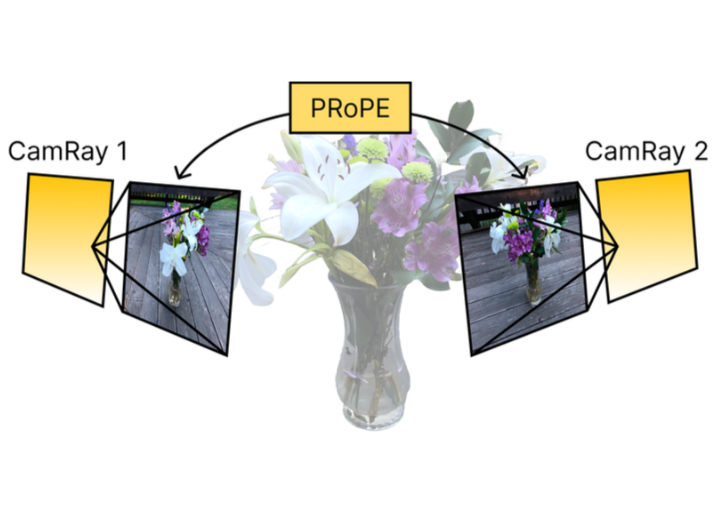
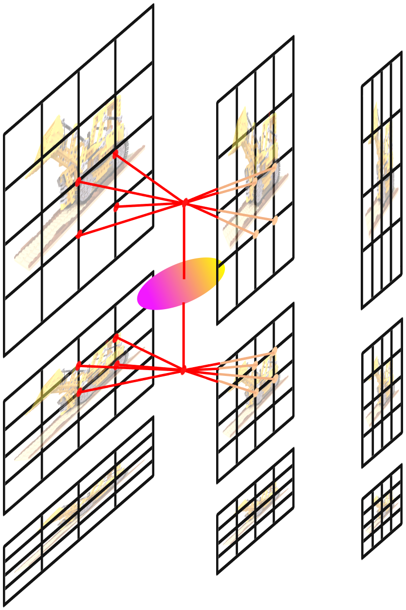
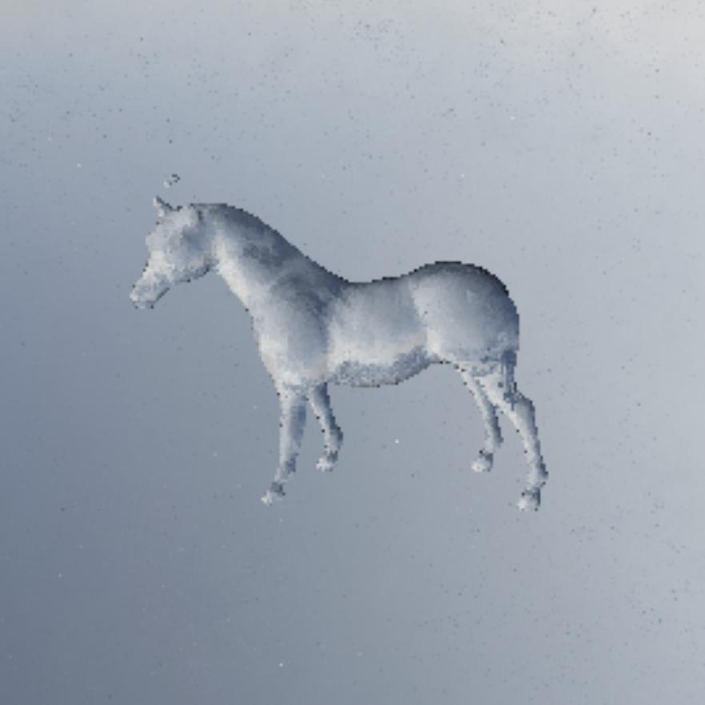

Publications
(* indicates joint first authorship)
|
|

|
Cameras as Relative Positional Encoding
Ruilong Li*,
Brent Yi*,
Junchen Liu*,
Hang Gao,
Yi Ma,
Angjoo Kanazawa,
arXiv 2025
project page
/
arXiv
/
code
Relative positional encoding for both camera intrinsic and extrinsic conditioning.
|
|

|
Rip-NeRF: Anti-aliasing Radiance Fields with Ripmap-Encoded Platonic Solids
Junchen Liu*,
Wenbo Hu*,
Zhuo Yang*,
Jianteng Chen,
Guoliang Wang,
Xiaoxue Chen,
Yantong Cai,
Huan-ang Gao,
Hao Zhao
SIGGRAPH 2024
project page
/
arXiv
/
video
/
code
Efficiently anti-alias NeRF using anisotropic pre-filtering low rank structure, which achieves higher PSNR within less training time compared with Zip-NeRF in the bounded scenes.
|
|

|
NeRRF: 3D Reconstruction and View Synthesis for Transparent and Specular Objects with Neural Refractive-Reflective
Fields
Xiaoxue Chen*,
Junchen Liu*,
Hao Zhao,
Guyue Zhou,
Yaqin Zhang
arXiv 2023
arXiv
/
code
Reconstruct transparent and specular objects using a uniform neural representation.
|
Services
- TPAMI, TVCG, ACM MM Reviewer
|
Selected Awards
- Grand Prize of Study Scholarship, 2022 (Top 2%)
- National Scholarship, Ministry of Education of China, 2022 (Top 0.2% nationwide)
- First Prize, The Chinese Mathematics Competitions, Beijing, 2022
- National First Prize, Contemporary Undergraduate Mathematical Contest in Modeling, 2022 (Top 0.65% nationwide)
- First Prize, The Chinese Mathematics Competitions, Beijing, 2021
|
Misc
I'm a huge fan of Japanese manga, and my favorite manga artists are
Hideaki Anno,
Tatsuki Fujimoto and
Akira Toriyama!
I've read the entire series of
Evangelion,
Dragon Ball,
Attack on Titan,
Fullmetal Alchemist,
One Piece,
Naruto,
Chainsaw Man,
Bleach,
Fairy Tail,
Fire Punch,
Detective Conan,
Kuroko's Basketball,
Jujutsu Kaisen,
Demon Slayer, and
Magi. I'm also a ten-year veteran of
Clash Royale and have once ranked in the top 1000 on the China server.
|
|
{kind=link}